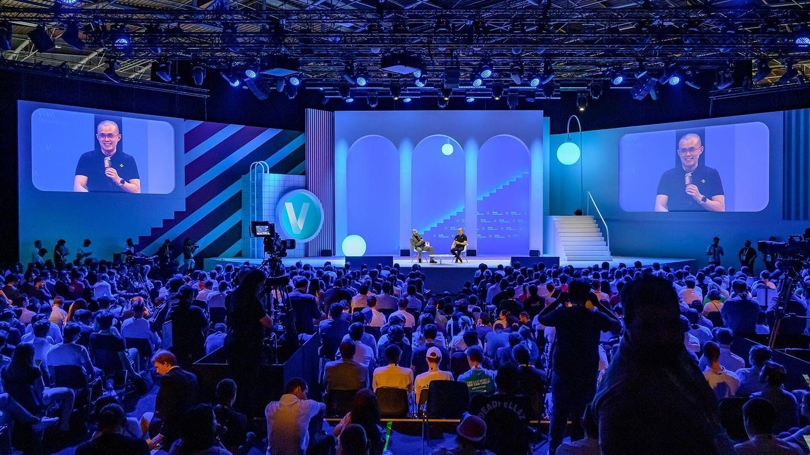
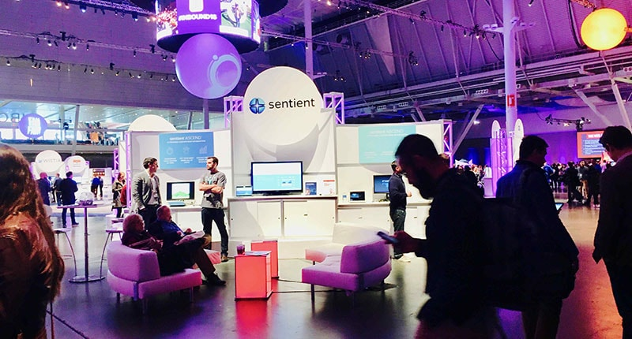
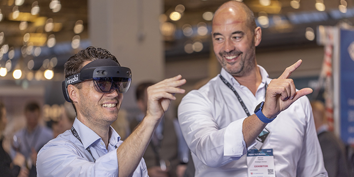

About the Conference
The TechForward 2024 is designed to bring together professionals from across the globe to discuss the latest technology trends, innovations, and challenges in the industry. Founded in 2010, our annual conference has grown into one of the most anticipated events in our field.
Our History
Since our inaugural event, TechForward2024 has sought to provide a platform for groundbreaking discussions, networking opportunities, and the sharing of insights from industry leaders. Our history is a testament to the passion and dedication of our organizing committee and participants alike.
From a modest gathering of tech enthusiasts and pioneers, TechForward has grown exponentially, reflecting the rapid evolution of the technology sector itself. Our first event, held in a small conference center, attracted a few hundred attendees. It was a day filled with vibrant discussions, workshops, and keynote speeches that set the tone for the years to come. The success of our debut was a clear indication of the burgeoning interest and the need for a dedicated space where technology professionals could converge, share, and innovate.
Over the years, TechForward has become synonymous with innovation, attracting thousands of participants from across the globe. Each iteration of the conference has built upon the last, incorporating new technologies, themes, and speakers that mirror the industry's dynamic nature. We've hosted Nobel laureates, industry disruptors, thought leaders, and visionary entrepreneurs who have all left their mark on the TechForward stage, inspiring countless attendees.
Our commitment to fostering a diverse and inclusive environment has also been a key focus. Recognizing the importance of varied perspectives in driving innovation, we've worked tirelessly to ensure our speakers, panelists, and attendees come from a wide array of backgrounds. This diversity of thought and experience has enriched the discussions and outcomes of each event, leading to collaborations that transcend borders and disciplines.
Moreover, TechForward has catalyzed numerous partnerships, startups, and innovations. The connections made during our networking sessions have often blossomed into fruitful collaborations, with many attendees returning year after year to share their progress and new ideas.
As we look towards the future, TechForward2024 remains dedicated to pushing the boundaries of what's possible. Our history, marked by growth, innovation, and community, lays the foundation for a future where technology continues to be a force for positive change in the world. Join us as we continue this journey, exploring the next frontiers of technology and shaping the future together.
Meet the Organizers
Jessica Lin
Co-founder & Event Director
Jessica Lin brings over a decade of experience in tech event planning and community building to TechForward 2024. As a co-founder, she focuses on creating inclusive and engaging environments for all attendees.

Daniel Roberts
Head of Operations
Daniel Roberts is the operational genius behind TechForward 2024, ensuring every detail of the conference runs smoothly. His commitment to excellence and efficiency is indispensable.
Sophia Martinez
Marketing Director
Sophia Martinez drives the marketing efforts for TechForward 2024 with innovative strategies and a deep understanding of digital marketing, expanding the conference's reach and impact.
Gallery from Past Events


